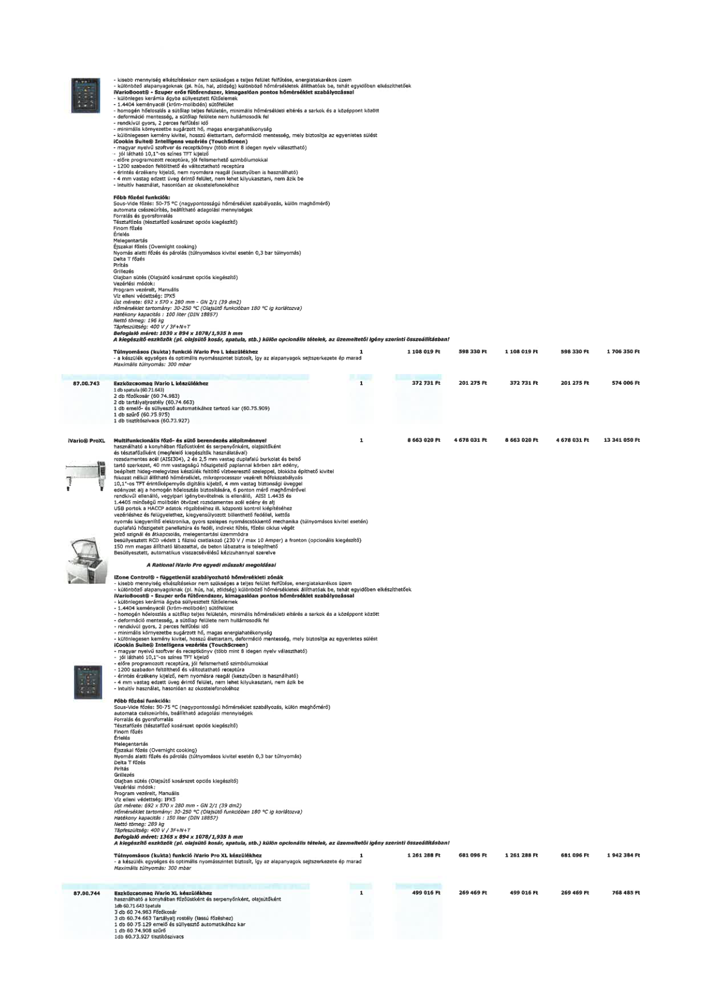

| Tétel | Menny. | Egys. | Anyag e.ár (net HUF) | Díj e.ár (net HUF) | Anyag összesen (net HUF) | Díj összesen (net HUF) | Anyag+Díj összesen (net HUF) |
|---|---|---|---|---|---|---|---|
| Túlnyomásos (kukta) funkció iVario Pro L készülékhez | 1 | NaN | 1 108 019 | 598 330 | 1 108 019 | 598 330 | 1 706 350 |
| 87.00.743 Eszközcsomag iVario L készülékhez | 1 | NaN | 372 731 | 201 275 | 372 731 | 201 275 | 574 006 |
| iVario® Pro XL Multifunkcionális főző- és sütő berendezés alapépítménnyel | 1 | NaN | 8 663 020 | 4 678 031 | 8 663 020 | 4 678 031 | 13 341 050 |
| Túlnyomásos (kukta) funkció iVario Pro XL készülékhez | 1 | NaN | 1 261 288 | 681 096 | 1 261 288 | 681 096 | 1 942 384 |
| 87.00.744 Eszközcsomag iVario XL készülékhez | 1 | NaN | 499 016 | 269 469 | 499 016 | 269 469 | 768 485 |
